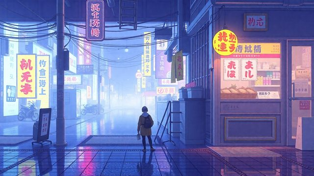

CH02-075 — images
【情報過食】見れば見るほど不安になる仕組み
ep
CH02
Script Viewer
snapshot
guide
script
audio
thumb
images
CH02-075
images
updated_at: 2026-01-12T10:15:07.743046Z
run_id:
CH02-075_mix433_20260106
CH02-075
スマホと不安のサイクル／情報と不安の関係
CH02-075
情報と不安の関係／情報の量調整の重要性
CH02-075
情報収集の時間管理
CH02-075
情報源の選定
CH02-075
事実と推測の分離
CH02-075
行動による不安軽減／小さな行動の効果
CH02-075
体調と情報依存
CH02-075
情報の意味づけ
CH02-075
最悪シナリオの具体化
CH02-075
情報と知恵の違い
CH02-075
感覚によるリセット
CH02-075
他人の不安の受け取り方
CH02-075
情報更新のタイミング
CH02-075
情報の入口と出口の儀式
CH02-075
情報の食事の意識
CH02-075
体調確認の重要性
CH02-075
情報の分類／常備情報の整備
CH02-075
情報後の体の動かし方／情報共有ルール
CH02-075
今ここへの意識の戻し方
CH02-075
情報の飽和サイン
CH02-075
情報の役割分け
CH02-075
外部からのサポート
CH02-075
情報の休息の捉え方
CH02-075
感情の温度記録
CH02-075
動かせるものと動かせないもの
CH02-075
情報の意図の感じ取り／夜の不安の対処法
CH02-075
情報の断食
CH02-075
感情の対象化／呼吸と小さな行動／情報と好奇心の分離
CH02-075
情報の二段階処理
CH02-075
光と音の情報
CH02-075
情報の確認タイミング／情報の断食
CH02-075
身体の位置の変化／情報の温度共有
CH02-075
情報の温度を共有／余力を守る／まとめる
CH02-075
不安を言葉に変える／川から水を掬う／価値観のフィルター
CH02-075
情報を受け取る姿勢／検索回数の制限
CH02-075
情報の分類／情報の動かす・固める
CH02-075
未来の想像／情報の扱い方の変化
CH02-075
情報の道具化／情報の扱い方の変化

CH02-075
情報の道具化